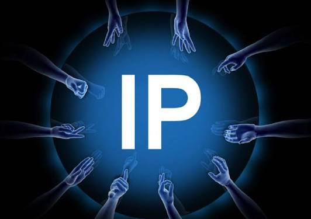

An IP address is a unique number given to every device connected to the internet. It acts just like a physical home mailing address for your digital gadgets. Without this number, the internet wouldn't know where to send the data you request. For example, when you watch a video, the video file uses this address to find your exact phone. Ultimately, it ensures that online information gets to the right destination without getting lost.
A network is a group of computers and electronic devices that are connected together. It acts like a digital bridge, allowing these devices to talk and share resources. A network can be small, like the wireless Wi-Fi connecting the gadgets inside your home. It can also be massive, linking millions of systems together to form the global internet. Essentially, it turns isolated electronics into a connected team that can work together.
A protocol is a strict set of digital rules that controls how devices share information. It serves as a universal language that all connected electronics must speak. This ruleset ensures that completely different brands, like an Apple iPhone and a Samsung TV, can understand each other perfectly. Without these guidelines, data would be sent in a messy format that other devices couldn't read. In short, protocols keep digital communication organized, predictable, and running smoothly.